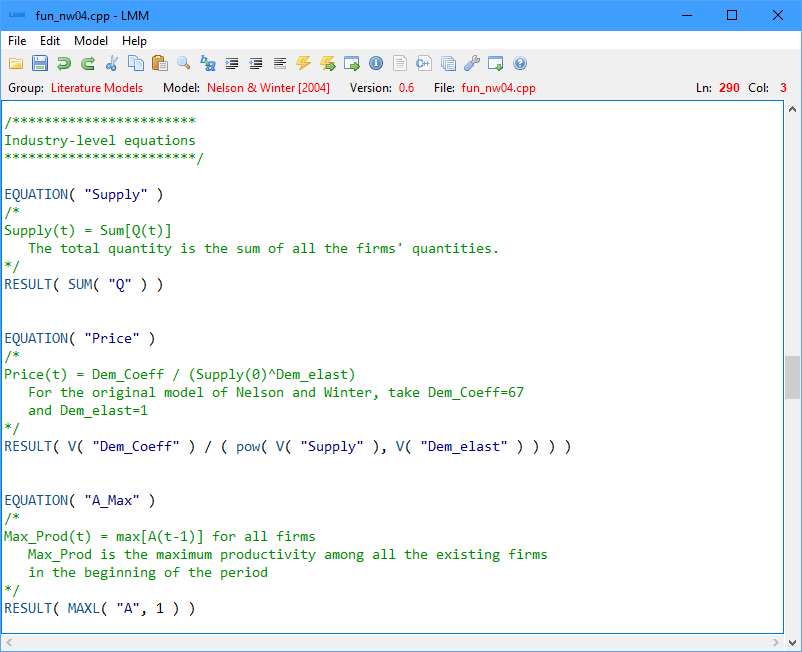

LSD Model Manager – LMM
|
 |
2. Menu File 3. Menu Edit 4. Menu Model 5. Menu Help |
The LSD Model Manager (LMM) is an integrated development environment (IDE) used to generate, modify and run LSD models. It consists of a code text editor, plus a series of commands to manage and execute LSD model programs.
To open LMM, double click the LSD (LMM) icon in the desktop. The LSD (LMM) icon should have been created during the LSD installation. If the icon was deleted (or otherwise is not available), you may recreate it following the instructions contained in Readme.txt for your operating system (Windows, Linux or macOS). Alternatively, you may also invoke LMM from the file explorer program by double-clicking the appropriate file in the LSD installation directory (Windows: run.bat or run64.bat, Linux: lmm or lmm32, macOS: lmm[.app] or lmmOSX) or running it from a command prompt or terminal window.
When starting LMM, you are presented with the LSD Model Browser. Using the Browser you can immediately select an existing model to work or even create a new one.
Both LMM and LSD are extensively documented by help pages easily reached using the top help bar. This document covers the use of LMM. It is organized according to the program’s menu entries and each section can be also reached by the use of the buttons Help in most LMM dialog windows.
First-time users are referred to the tutorial on using LMM and LSD.
The LMM window is formed by four elements: (1) the menu bar, (2) a shortcut tool bar, (3) an information bar, and (4) the text editor area.
The menu bar contains all commands available in LMM and is divided in four submenus (File, Edit, Model, Help). Each submenu in the menu bar is described in details in the next sections.
The tool bar offers shortcuts to the most frequently used commands, making their access simpler. The icons in each shortcut icon represent the respective command. A single mouse click on the shortcut executes the associated command. Hovering with the mouse over the icons shows the command name on the right part of the tool bar.
The information bar, shown above, indicates: the current model group, the name of the selected model, if any, the selected model's version number, the name of the model file currently loaded in the editor area, and the text cursor current position in line.column format (first line is 1 and first column is 0, to comply with the standard compiler convention).
The editor area is available for the user to edit the currently loaded file (usually, the model’s description file or the equation file). The editor accepts the usual commands for browsing, selecting, deleting, etc. Also, the most frequently-used editing commands in menu Edit have also key-based shortcuts for faster access while typing (the shortcuts are indicated along the commands in the menu). Moreover, a context popup menu with commonly used commands is always available and it is activated the right mouse button.
Although the editor can deal with any kind of text file, when a LSD equation file (or any C language related file) is loaded, full syntax highlighting is available (different colors to distinct code elements). For instance, C++ comments (all the text included in between /* and */ marks or the remaining of text beginning with // in a line) are highlighted in green.
Another useful feature for editing programming code is the automatic indentation. When a new line is inserted (pressing the key Enter), the editor fills the beginning of the new line with as many spaces/tabs as in the previous line, facilitating the standard programming indented style.
This menu deals with commands involving file operations. The menu is divided in 4 or 5 groups of commands, according to the setting defined in Options (Show text file commands checkbox):
· New Model/Group, Browse Models, Save Model, Save Model As
· Optional group (New Text File, Open Text File, Save Text File, Save Text File As)
· Options
· Quit
Create a new LSD model, optionally inside a new group of models. According to the user selection, the model (or group) can created inside the current group, as pointed in the information bar, or in a newly created group contained in the current one.
Shortcuts: Ctrl+b or click the yellow folder icon on the tool bar.
Browse the LSD models available on your computer using the LSD Model Browser. The models are usually organized in groups containing related models. After installation, there are two main groups created: Example Models and Work in Progress. In the first group you find several ready-to-run example models (see the tutorial on how to use them). You are encouraged to save your new models inside the second group.
The LSD Model Browser window lists the models available in the current group. Models are organized in a tree of groups, like directory/folders in the file system. As the user scrolls through the list, a brief description of the model highlighted is shown. Navigation in and out of groups is also possible with the usual file browser commands.
When the desired model is highlighted (single click or arrow keys), selected it with a double click or pressing Enter. LMM will load the model and present the full model description, if any, or the model Equations’ code, otherwise. When a new model is loaded, LMM automatically manages all the files concerning the chosen model.
Modelers can use other LSD Model Browser functionalities to properly organize the set of models into suitable groups (e.g., move a finished model from the Work in Progress group to the PaperXXX group).
Using the LSD Model Browser it is possible to:
· select and open an existing model;
· create new groups of models;
· create new models;
· copy a model and paste it under a different name in the same group;
· copy a model from one group and paste it in another one;
· delete existing groups and models (move to Deleted models group);
· edit the name and the description of models and groups.
When necessary, the above functions will request the relevant information in self-explaining dialog windows. In all cases, pressing Esc will abort the current operation. If just the LSD Model Browser window is open, it will be closed without affecting the currently loaded model.
Shortcuts: Ctrl+s or click the blue floppy disk icon on the tool bar.
Save changes to the currently open LSD model, if any. This command affects only the current file loaded in the editor area, as the remaining model data is already saved into files.
If any operation requiring the use of the current loaded file is performed (like compiling the model) or quitting, LMM will ask the user to save the changes, if any, before proceeding.
Shortcut: Ctrl+a.
Save the current LSD model under a different name. This command creates a new model, copying all files from the current model to the new home subdirectory defined by the used. After the copy, LMM automatically opens the new model.
This command is useful to “clone” an existing model so the user can try changing it without risking modifying the original copy.
Use TkDiff (see below) to compare the equation files from two LSD models. This command shows the complete list of LSD models present in the computer.
Users need to select the first model and then click on the top Insert button. Next, select the second model and click the bottom Insert button. Finally, click on Compare to launch the TkDiff window comparing the selected models. TkDiff will mark the differences between the equation files of the two models.
TkDiff can be used to compare any pair of text files, identifying their differences. It shows differences between two files, useful to compare equations' code differences in two versions of the same model.
User must choose the two files to be compared, optionally providing additional options to TkDiff (see TkDiff documentation for details).
Create a new text document initially labelled noname.txt, closing the one currently loaded (asking before if there are unsaved changes). When saving the document it is possible to change its name.
Please note that files created with this command are not automatically integrated to any LSD model, open or not. Be careful when entering Equations in files created using this command
This is an optional menu entry and it is disabled by default. To enable it, please mark the Show text file commands checkbox in the Options window.
Shortcut: Ctrl+o.
Open an existing text file, closing the one currently loaded (asking before if there are unsaved changes).
Please note that it is not usually necessary to open the files required by LSD models since these can be accessed directly using the menu items in menu Model.
This is an optional menu entry and it is disabled by default. To enable it, please mark the Show text file commands checkbox in the Options window.
Save the current text file with the currently defined name (as per the information bar).
Please note that it is not usually necessary to save the files text used by LSD models. Check carefully whether you really want to overwrite existing files.
This is an optional menu entry and it is disabled by default. To enable it, please mark the Show text file commands checkbox in the Options window.
Save the current text file under a new name and (optionally) a new directory.
Please note that it is not usually necessary to save the files text used by LSD models. Check carefully whether you really want to overwrite existing files, if appropriate.
This is an optional menu entry and it is disabled by default. To enable it, please mark the Show text file commands checkbox in the Options window.
LSD user can set several options in both LMM and the LSD model programs using this option. The configuration items are:
· System terminal: the name of the operating system console to use when invoking the system commands like the debugger and Gnuplot. Usually cmd for Windows, Terminal for macOS and gnome-terminal for Linux.
· Debugger: the debugger command to use, normally gdb in Windows and Linux and lldb in macOS.
· HTML browser: the web browser to use (open invokes the default operating system browser).
· Tcl/Tk Wish: the Tcl/Tk interpreter executable used to run scripts.
· New models subdirectory: the name of the subdirectory where new groups and models are created (relative to LSD installation directory).
· Source code subdirectory: the name of the subdirectory where LSD source code is installed (relative to LSD installation directory).
· Font family and size: the typeface name and size to use in the text windows.
· Tab size: the number of columns to be occupied by a tab character.
· Syntax highlighting: the default desired level of syntax highlighting (none, partial or full).
· Wrap text: the default text wrapping state (on or off).
· Auto-hide on run: the default state of LMM auto-hide on run feature (on or off).
· Show text file commands: add text file commands to the File menu (on or off).
· Restore window positions: save LMM and LSD windows sizes and positions among user sessions, always resetting to default sizes and positions if disabled. LMM settings are global for all models. LSD windows configuration is kept on a per model basis.
Clicking on the Default button provides the most common options for the operating system in use. All options set with this command are persistent across LMM/LSD executions.
Shortcuts: Ctrl+q or click the X on the title bar.
Exit the LMM program, closing all the associated windows (but not the LSD model program ones) and discarding any unsaved data.
This menu offers editing options for the text file shown in the LMM editor area. Besides the usual editor operations, it offers tools targeted to LSD Equations. It is organized in 7 groups of commands:
· Find, Find Again, Find Backwards, Replace, Go to Line
· Match { }, Match ( ), Insert {, Insert }
· Larger Font, Smaller Font, Font
· Syntax Highlighting, Wrap/Unwrap, Tab Size, Insert LSD Macro
Shortcuts: Ctrl+z or click the green undo arrow icon on the tool bar.
Undo the last editing action. Can be used multiple times to undo several actions until the state of the text file at the moment it was opened.
Shortcuts: Ctrl+y or click the green redo arrow icon on the tool bar.
Redo the last undone editing action.
Shortcuts: Ctrl+x or click the scissors cut icon on the tool bar.
Remove the selected text and add it to the system clipboard. It does nothing if no text is selected (marked).
Shortcuts: Ctrl+c or click the double sheet copy icon on the tool bar.
Add the selected text to the system clipboard, without removing it. It does nothing if no text is selected (marked).
Shortcuts: Ctrl+v or click the clipboard and sheet paste icon on the tool bar.
Insert the text currently in the system clipboard at the current text cursor position. Does nothing if the system clipboard is empty or has non-text content.
Shortcut: Delete.
Remove the selected text or, if none, the first character to the right of the text cursor. It does not change the contents of the system clipboard.
Shortcuts: Ctrl+f or click the magnifying glass icon on the tool bar.
Find a text in the open text document. The search starts from the current cursor position and moves downwards or upwards, depending on the chosen option. The search is interrupted at the first instance found of the entered search text.
It is possible to make either a case sensitive or insensitive search. If the searched text is found it is selected (highlighted) and the Find window is closed. Otherwise, the Find window remains open so the search text can be easily changed.
Shortcut: F3.
Find again the same search text as specified in the previous Find command, always in forward direction, applying the same case sensitivity setting. Provide a quick way to find multiple instances of a repeated text pattern below the current cursor location.
Shortcut: Ctrl+F3.
Find again the same search text as specified in the previous Find command, always in backward direction, applying the same case sensitivity setting. Provide a quick way to find multiple instances of a repeated text pattern above the current cursor location.
Shortcuts: Ctrl+r or click the two different blue letters icon on the tool bar.
Search for a text pattern and replace it with the supplied text, if found. Direction and case sensitivity options are available as in the Find command. Three buttons are available in the Replace window:
· Find: searches for the next instance of the searched text and selects it;
· Replace: replace the selected instance of the searched text and immediately searches for the next occurrence;
· Replace all: replace all instances of the searched text until the end of the text, if searching up, or the beginning, otherwise.
Shortcuts: Ctrl+l or click in cursor location indicator in the information bar.
Go to the chosen line number in the open text document.
This function is useful to find error messages in compilation, since they are referred to by the line number.
Shortcuts: Ctrl+m or use the right-click context menu.
Find the curly bracket matching the one just to the right of the text cursor.
It is very useful when working with complex C++ programs as the blocks of lines (for example, if-then-else statements) are organized by pairs of { } curly brackets. It is easy to get lost in the sequences of open and close brackets, and errors due to the absence or redundancy of a bracket may be difficult to identify.
When the matching bracket is found, both the initial and the found one are highlighted. If the two brackets are far apart in the text, the user may want either to focus on the initial bracket or on the just found one. Users have are alternatives after a successful match: using the arrow keys, the cursor immediately returns showing the initial bracket. Otherwise, clicking with the mouse over the shown area moves the cursor there.
In case the search fails, meaning that the end of the text were reached before finding the matching bracket or the character on the right of the cursor is neither a } or a {, the command does nothing.
Shortcuts: Ctrl+p or use the right-click context menu.
Same as Match { } but operates on matching pairs of parenthesis.
Shortcut: Ctrl+(.
Insert a left-side curly bracket.
In some international keyboards there may be no curly bracket keys, required for editing C++ code.
Shortcut: Ctrl+).
Insert a right-side curly bracket.
In some international keyboards there may be no curly bracket keys, required for editing C++ code.
Shortcuts: Ctrl+'>' or click the indent icon on the tool bar.
Add a space character at the beginning of the selected line(s) of text. It is useful to organize blocks of code for easier reading.
Shortcuts: Ctrl+'<' or click the de-indent icon on the tool bar.
Add a space character at the beginning of the selected line(s) of text. It is useful to organize blocks of code for easier reading.
Shortcut: Ctrl+'+'.
Increase the size of the typeface font used in the editor area.
Shortcut: Ctrl+'-'.
Decrease the size of the typeface font used in the editor area.
Set the typeface family and the font size to use in the editor.
This is a temporary setting. For changing the font settings permanently, please use LMM Options.
Shortcuts: Ctrl+; (full), Ctrl+, (partial), Ctrl+. (none).
Set the level of LSD and C++ syntax and keywords highlighting. It can be adjusted in three levels. This is a temporary setting. For changing the highlighting setting permanently, please use LMM Options.
Shortcuts: Ctrl+w or click the wrap icon on the tool bar.
The text area can be set to wrap the text so lines wider than the window width do not spill over the right side of the window. The default is no wrapping, so that the final part of long lines may be hidden and require scrolling the text to be shown.
Choosing this command alternates between the wrapping modes. The wrapping mode does not affect the contents of the text file, but only its appearance on the screen. This is a temporary setting. For changing the wrapping setting permanently, please use LMM Options.
Defines how many columns a tab character should span on screen. Tab characters are not converted to spaces.
The tab size does not affect the contents of the text file, but only its appearance on the screen. This is a temporary setting. For changing the tab size setting permanently, please use LMM Options.
Shortcuts: Ctrl+i or use the right-click context menu.
Insert frequently-used LSD code at the text cursor (the equation style between LSD macros or C++ functions depends on the Coding Style chosen), accelerating code typing and minimizing mistakes.
The available code blocks are presented in a list (see LSD macros for the complete reference). After the user choice, a template window requesting the values necessary for the option appears. It contains default values for most values required and modelers can move between fields just pressing Enter.
The list of available code blocks also has shortcut keys. Pay attention to the highlighted letters as they can be used pressing Control and the corresponding upper case letter. For example, pressing Control+V insert a V(…) macro.
The commands in menu Model provide the tools to revise modify or execute an existing LSD model. The available items in this menu operate in the current open model only and are organized in four groups:
Items available in menu Model:
· Compile and Run, Recompile, GDB/LLDB Debugger, Create ‘No Window’ Version, Model Info
· Show Description, Show Equations, Show Extra Files, Show Make File, Show Compilation Results
· Model Options, System Options
· Auto-hide LMM, Equation Code Style
Shortcuts: Ctrl+r or click the on the second yellow lightning icon on the tool bar, the one with the green arrow.
Compile, if necessary, and execute the LSD model program. LSD checks that all the files necessary for the LSD model program have been compiled, and then runs the resulting LSD model program (see the corresponding manual) and opens the LSD Browser, if there is no compilation problem. Otherwise, the Compilation Errors window shows up, pointing to the found problems.
Errors are presented when the compiler cannot interpret or disambiguate a command in the equation file. It may be caused by several situations, like invalid syntax, typos, undeclared variables, etc. Check here the most common errors and possible fixes.
When LMM presents a compiler error it also offers the possibility to directly jump to the file and position where the compiler found the error (use the Go to Error button). Note that this error may have occurred before this point (usually not by much) but never after it. Please try to read the message(s) presented in the errors window in the order they are shown to facilitate understanding the origin of the problem (it is common that a single error originates more than one message). Note that you can always reopen the last errors list choosing Show Compilation Results.
Shortcuts: Ctrl+p or click the on the first yellow lightning icon on the tool bar.
Recompile the LSD model program but does not execute it. In certain situations, like using an external text editor for changing the equation file(s), preparing for debugging with GDB/LLDB, or replacing external libraries to be compiled with your LSD model program, it may be needed to recompile the model irrespective to the usual LSD checks and/or defer its execution.
Shortcuts: Ctrl+g or click the on the white window with a green arrow icon on the tool bar.
Launch the GDB (or LLDB on macOS) debugger and load the current LSD model program on it.
The external debugger allows the modeler to follow the simulation run instruction-by-instruction. A debugger is a program which runs other programs in a controlled environment. When a program is run in a debugger, it is possible to observe in detail what it does, for example, interrupting its calculations and checking the values of its internal variables. The debugger works as if the single lines of code execute their respective commands only when explicitly directed to do so.
Note that GDB and LLDB are C++ debuggers. Therefore, they know nothing of LSD Equations, Objects, etc., except for their (complicate) technical representations. The debugger permits, for example, to investigate line by line the execution of an equation. However, this means that one has also to follow line-by-line a lot of non-interesting technical code.
LSD modelers may find more useful the LSD Debugger: it follows the simulation at the level of individual Equations. When one Variable, marked to be debugged, is computed, the LSD debugger interrupts the simulation, shows the value produced in the equation, the values of the v[n] temporary values, the model’s elements values, etc., permitting to find, most of times, the cause of an error. See the LSD Debugger help page.
However, GDB/LLDB may be still useful in case of some hard problems. The LSD model program in GDB/LLDB runs as usual (slightly slower, if anything) but the user can interrupt the program at any point, check the value of any variable, and make the program proceed by single steps. It is usually useful to focus on one Equation at a time and see the behavior of the program while executing it.
Below, some basic GDB commands are presented (LLDB commands are similar but not the same, please check the LLDB documentation). GDB commands are typed at its command prompt text window. For more information, please refer to the GDB documentation).
· break fun_XXX.cpp:132: places a breakpoint at line 132 of the file fun_XXX.cpp. When the execution of the program reaches that line, GDB interrupts the program and offers the users with the GDB prompt.
· break 232: places a breakpoint in the currently considered source file at line 232.
· break myfun: places a breakpoint at the first line of the C++ function myfun.
· break variable::fun: places a breakpoint at the first line of the method named fun of the object named variable.
· run: run the program from the beginning. The execution will be interrupted at one of the following events: (1) the normal end of the program is reached; (2) the flow of the program finds a breakpoint; or (3) the program crashes.
· step: executes just one step of the program.
· next: like the command step, but if a C++ function call is to be executed this command "steps over" it without stopping at the code within the function.
· continue: restart program execution after an interruption.
· print X: shows the content of the variable X.
· display X: shows the content of the variable X, which remains visible through other commands (e.g., next, step etc.) until undisplay is called.
· delete [n]: remove the breakpoint numbered as n. If no number is specified all the breakpoints are removed.
· list: shows the source code lines above and after the one that is going to be executed.
· list -10 [10]: shows 10 previous [subsequent] lines in respect of the one shown before.
· cond 2 v[0] == 3: assigns a condition to breakpoint number 2, so that the execution is interrupted only if the condition (v[0] == 3) is true.
· backtrace: shows the stack of the program. It is the list of functions that were called until that moment in the execution of the program.
· Help: shows GDB help information.
GDB can do (unambiguous) command completion, so that typing, for example, disp and then pressing the tab key, the command display is automatically completed. In case of possible ambiguity (e.g., typing only dis and tab) the prompt shows the list of alternative among which to choose (this is also a weird, but rather useful, way to discover new functionalities). Unambiguous shortcuts (e.g., s for step) can be always used.
Generate a command-line version (no graphical interface) of the LSD model program, including the source code to recompile it in other computers and operating systems. This is useful to run the simulation in servers or computer clusters, allowing the processing of huge numbers of simulation runs in parallel.
Since there is no graphical interface, the No Window version needs a model configuration file (.lsd extension) already prepared using the graphical LSD Browser. The simulation results are automatically stored in files (.res or .res.gz extension), to be loaded in the regular LSD Analysis of Results window or in R (using package LSDinterface).
To move the non-graphical LSD model program to another operating system (or sometimes a different version of the same operating system), you need to copy the model home directory to the destination computer. At least the following files must be copied:
1) The equation file, normally called fun_XXXXX.cpp (XXXXX is the name of your model)
2) One or more configuration files (.lsd extension)
3) The special make file named makefileNW
4) The whole subdirectory named src (within the model home directory)
After copying the required files to the desired directory in the new computer, you must recompile the non-graphical LSD model program:
1) Compile the LSD model program: at the command line (terminal) prompt, make sure the copied model home directory is the current one and use the command make -f makefileNW to generate a new executable file. If you get an error and compilation fails, you may have to adjust some of the variables in the makefileNW file for the characteristics of your system.
2) Run the LSD model executable file: at the terminal prompt, use one of the commands below to run the desired LSD configuration file.
3) Collect the results files: after each simulation run, by default LSD generates a compressed results file (.res.gz extension), containing the data marked for saving, in the same directory of the configuration file.
4) Analyze the results: use the produced results files in the desired program (LSD or R).
The non-graphical LSD model program can be run under two different setups: single or multiple configurations.
The first setup uses a single configuration file, possibly executing many simulation runs under different pseudo-random generator seeds. The terminal command line (for a configuration named XXXXX and the current directory set to the model home) is:
Windows: lsd_gnuNW -f XXXXX.lsd
Linux/macOS: ./lsd_gnuNW -f XXXXX.lsd
The second setup uses multiple, sequentially-numbered configuration files, typically produced using LSD sensitivity analysis tools. The terminal command line (for a configuration named XXXXX, the first sequential number set to N and the current directory set to the model home) is:
Windows: lsd_gnuNW -f XXXXX –s N
Linux/macOS: ./lsd_gnuNW -f XXXXX –s N
N is an integer used to choose the initial configuration file, which should be named according to the convention XXXXX_N.lsd. The following configuration files are processed sequentially until the last one (or until the sequential number M is reached, if the option -e M is appended to the commands above).
Shortcut: click the on i blue icon on the tool bar.
Show summary information about the model and allow the edition of the name and version:
· Model name (editable)
· Model version number (editable)
· Model home directory (which contains all the model files)
· Date of creation
· Date of latest modification of the equation file
Shortcuts: Ctrl+d or click the on the white text page icon on the tool bar.
Load the current description file containing the textual description of the model content, if prepared by the modeler, in the LMM editor area. The text can be edited at any time after the model is created. If a description text file does not exist, it is automatically created.
As the top part of description text is automatically shown by the LSD Model Browser and open when a model is loaded in LMM, it is important to have at least the basic model information included in the beginning of this document. Modelers are also encouraged to include details about how to set-up and experiment with the model, including a self-explanatory list of the available model configuration files.
Shortcuts: Ctrl+e or click the on the white C++ page icon on the tool bar.
Load the equation file of the current model in the LMM editor area. The equation file contains the Equations required to create the LSD model program. The modeler writes in this file the code for the Equations in separated blocks whose order is of no importance. There are two possibilities to code one equation: the LSD macro language and using the (now deprecated) LSD C++ functions (recommended only for the maintenance of old models). Check this tutorial on how to create your first model.
The equation file shown in LMM should be used only for editing a model and should not be used just for learning a model. It is not easy to mentally reconstruct the operation of a model looking only at the Equations code. To learn a LSD model, LSD offers better alternatives, please refer to this tutorial.
Shortcuts: Ctrl+j or click the on the white multi-page icon on the tool bar.
Load a specific source file of the current model in the LMM editor area. As an LSD equation file turns larger, it may become unpractical to keep working with all the Equations’ code under a single file (the default setup for new models). To solve this problem, LSD allows the modeler to split the model’s code in as many separate files as needed (all stored in the model home directory or in a subdirectory of it).
Under a multi-source files model, the modeler is responsible to explicitly include all the extra source files at the beginning (just before MODELBEGIN) of the main equation file (the one created by LSD) using the C++ directive #include "filename", replacing filename with the real name of each additional file. Also, the modeler has to inform LMM to check for changes in those files, to ensure recompilation when required, by adding the extra file names to the FUN_EXTRA= directive in the Model Options.
All files included in the model options configuration can be easily accessed using the window listing the extra files (by mouse double click or using the arrow keys and Enter).
Show the content of the regular make file used to produce the LSD model program. The make file is a text file which contains the commands necessary to build the model program using the LSD source code and the equation file(s). This command is provided only for checking the contents of the make file used during the last model compilation. Changes made to it are going to be destroyed next time the model is recompiled. To modify the compilation options see the Model and System Options.
Show again the errors from the last compilation, if any, in a new Compilation Errors window. If the compilation did not issue any error the window is empty.
This option may be useful whenever there are many errors in the equation file. Please note that the Go to Error button may not jump to the correct error line if the equation file has already been edited. The compilation errors and the possible fixes are discussed in the LSD Quick Help.
Shortcut: click the on the wrench icon on the tool bar.
Set the compilation options for the current LSD model. Each of the required entries is described in the table below.
|
Entry |
Default |
Comments |
|
TARGET= |
lsd_gnu (Windows, Linux) LSD |
The name of the LSD model program executable file. In Windows, the .exe extension is automatically appended. |
|
FUN= |
fun_XXXXX |
The base name (no spaces or extension) of the equation file for model XXXXX, that is, the C++ source file containing the code for the (main) model's Equations. The extension .cpp must not be included. When creating a new model LSD by default assigns the name fun_XXXXX.cpp to this file, where XXXXX is the same name of the model home directory. |
|
FUN_EXTRA= |
|
Extra source code file names added by the modeler. Files names must be separated only by spaces and no new lines should be manually entered. File names can be added using the Add Extra button. |
|
SWITCH_CC= |
-O0 -ggdb3 -O3 |
Any optional compiler switch can be added to this entry. The default -ggdb3 option includes full (external) debugging information. The default -O0 prevents code optimization to ensure a better debugging experience. Options -O3 turns on full compiler optimization, slowing down compiler speed but generating slightly faster code. See the documentation for the GCC compiler for further options. The Debug checkbox can be used to switch among the debug on/off states. |
|
SWITCH_CC_LNK= |
|
Any optional compiler switch to be used by the linker only can be added to this entry. |
Other than manually modifying the model option entries, the dialog box offers options for quickly modify the configuration:
· Debug checkbox: mark it (the default) to produce code which can be used in the GDB/LLDB debuggers. This option produces code that is larger a slightly slower and can be disabled if the user is not going to use an external debugger.
· Add Extra button: add extra source files to the model. Adding files here do not add the corresponding #include lines to your main equation file. Please check the discussion here about the use of extra source files in your model.
· Default button: resets all options to their default values. Also removes all extra files from the configuration.
· Clean Obj. button: erases all intermediate (object) compiler files from LSD and the current model. Does not change the model options. It can be used to fix some rare compiler inconsistency problems.
Set the compilation
options for all LSD models. Each of the required entries is described in the
table below.
(The version of Tcl/Tk libraries needs to be changed according to the one
installed in case of Linux computers)
|
Entry |
Default |
Comments |
|
LSDROOT= |
C:/Lsd-X.Y ~/Lsd-X.Y |
This is the root of the LSD installation directory. |
|
SRC= |
src |
The subdirectory in the LSD installation directory containing the LSD source code. You will probably never need to use this option. It may be used to test different versions of LSD. |
|
EXT= |
.exe [blank] |
The operating system file extension required for executable files. |
|
TCL_VERSION= |
8X 8.X [blank] |
Tcl/Tk libraries version number (1 digit). In case of errors in
Linux like: |
|
PATH_TCLTK_ FRMWRK= |
[blank] $(LSDROOT)/LMM.app/ |
Absolute path to the Tcl/Tk framework directory. |
|
PATH_TCL_HEADER= |
$(LSDROOT)/gnu64/include /usr/include/tcl$(TCL_VERSION) Tcl.framework/Headers |
Absolute path to the Tcl header files directory. |
|
PATH_TK_HEADER= |
$(LSDROOT)/gnu64/include /usr/include/tcl$(TCL_VERSION) Tk.framework/Headers |
Absolute path to the Tk header files directory. |
|
PATH_HEADER= |
$(LSDROOT)/gnu64/include . |
Absolute path to the standard C++ header files directory. |
|
PATH_TCL_LIB= |
$(LSDROOT)/gnu64/lib . |
Absolute path to the Tcl library directory. |
|
PATH_TK_LIB= |
$(LSDROOT)/gnu64/lib . |
Absolute path to the Tk library directory. |
|
PATH_LIB= |
$(LSDROOT)/gnu64/lib . |
Absolute path to the standard C++ libraries directory. |
|
TCL_LIB= |
-ltcl$(TCL_VERSION) -framework Tcl |
Name of Tcl library/framework file. |
|
TK_LIB= |
-ltk$(TCL_VERSION) -framework Tk |
Name of Tk library/framework file. |
|
LIBS= |
-lz -lz -lpthread |
Name of additional libraries to be used. Insert here any special library to be used with the model. Minimum required libraries are zlib (handle compressed result files) and pthreadlib (multitasking, Linux/macOS only). |
|
CC= |
x86_64-w64-mingw32-g++ g++ |
The C++ compiler name. By default, Windows (64-bit) uses the minGW compiler which must be installed. |
|
GLOBAL_CC= |
-march=native -std=gnu++14 |
Compiler switches (options) to be used with all models. Default switches produces code optimized for the compiling computer (may not run on older computers). The minimum supported C++ version is C++11 but the default version is C++14. |
|
SSWITCH_CC= |
-mthreads -mwindows -O3 -fnon-call-exceptions
-O3 |
Default compiler switches (options) to be used for all models. May be reset by the model specific switches for the equation file(s). Except for the -O3 switch (full code optimization), all the remaining default switches are compulsory and should not be changed. |
Observation: the default values for some still supported legacy operating systems (OSX and Windows 32-bit) are not shown above but are correctly handled when the Default button is used. However, not all LSD modern features are supported under such systems. In case of missing or mismatched required configurations, a warning (in red text) is present under the text window, clicking Default should fix the most common problems.
These options are used to create the make file used to compile the LSD model program. Besides the Equations’ code, compiling a model program requires the exact name and location of several system files. This information is not standard on all operating systems and versions. Generally, the default values proposed should suit most cases, and are applied by using the Default button, which automatically detects the current operating system (among Windows 32-bit, Windows 64-bit, Linux, legacy OSX, and macOS). The details about the compiler and the associated tools are described for each operating system in Readme.txt.
Shortcut: click the on the white window with a down green arrow icon on the tool bar.
When this toggle option is on (ticked), the LMM window is automatically minimized after a successful compilation while executing the Model>Compile and Run menu option (or the equivalent shortcuts). This way, the LSD model program windows can fully use the computer desktop space without closing LMM. LMM window can be easily restored using the operating system task bar (or equivalent).
This is a temporary setting. For changing the auto hide setting permanently, please use LMM Options.
Allow choosing between the modern LSD macro language or the (now deprecated) legacy C++ functions language for writing the Equations’ code. LMM will use the corresponding format when the modeler uses the code template wizards.
The LSD functions language is now deprecated and should be used only when working with legacy models adopting it. Not all modern LSD features and optimizations are available when using the functions language.
The Help menu contains three groups of entries, the first two offering useful entry points to the LSD documentation:
· Help on LMM, Help on Macros for LSD equations, LSD Documentation
· LMM Primer Tutorial, Using LSD Models Tutorial, Writing LSD Models Tutorial
Shortcut: F1.
Access the LMM manual (this document) in the configured web browser. If the browser is already open, the help page may show as an additional window or tab, according to the web browser configuration.
From any help page you can navigate the entire LSD documentation using the top navigation bar.
Shortcut: click the on the blue question mark icon on the tool bar.
Access the LSD macro language reference in the configured web browser. If the browser is already open, the help page may show as an additional window or tab, according to the web browser configuration.
From any help page you can navigate the entire LSD documentation using the top navigation bar.
Access the LSD documentation in the configured web browser. If the browser is already open, the help page may show as an additional window or tab, according to the web browser configuration.
The LSD documentation provides access to an extensive set of help pages, covering every aspect of LSD model creation and usage. The help pages are necessary to fully exploit LSD, and users are encouraged to make use of the manual pages while learning and using LSD.
Generally speaking, the LSD help pages are structured as a hyper-textual documents where each element related to LSD operation has a section devoted to it, answering questions like "What does this mean?" or "How do I use this?". Each section is filled with links to related sections. LMM and LSD help pages are organized according to the menus where the commands appear. Each help page begins with the picture of the respective interface and contains the full list of the commands available. From any help page you can navigate the entire LSD documentation using the top navigation bar.
LSD absolute new users are strongly recommended to do this first tutorial, covering the very basic operations and concepts of LMM and LSD. It guides first-time users to open LMM, explore its basic components and test the running of the example models available in the LSD installation.
The second tutorial is targeted on LSD users willing to learn, use and test existing LSD models, provided by the models’ authors. It presents the main steps to start using LSD models for practical purposes.
The third tutorial offers an introduction to users planning to develop their own LSD models or modify existing ones. It is organized as a step-by-step guide on the creation of a simple LSD simulation model.
Present technical details about LSD, the computer platform in use, the operating system, the Tcl/Tk support libraries, and the C++ compiler in use. It can be useful when reporting bugs or diagnosing compatibility problems.